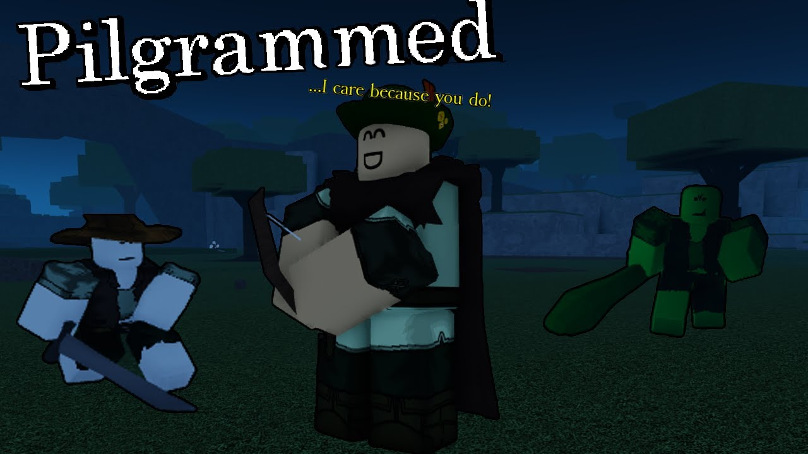
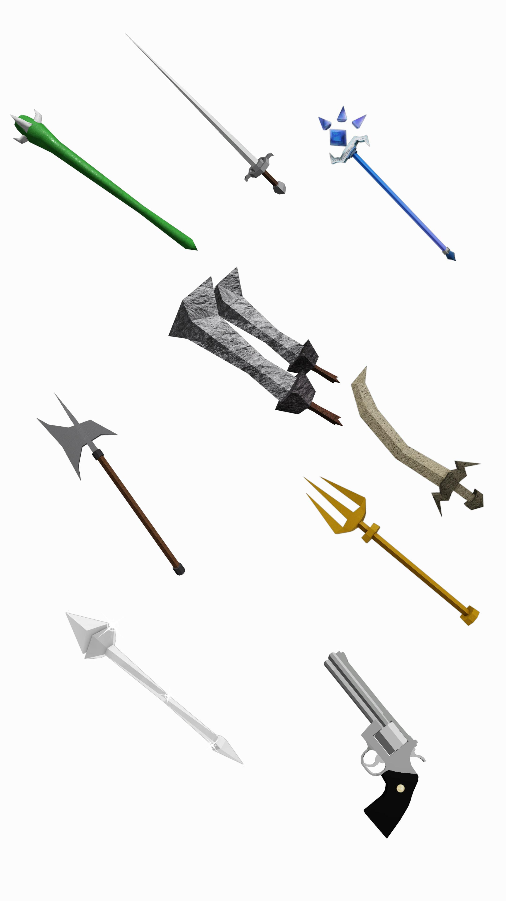
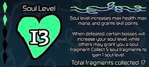
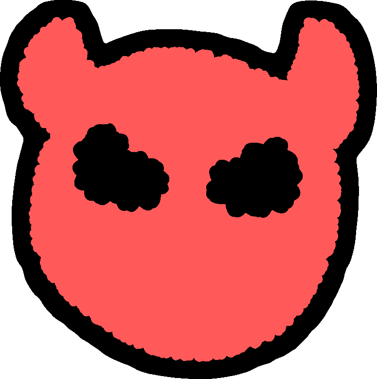

Hello! Welcome to my website where I talk about
my Top 5 Favorite Roblox Games!

Pilgrammed is an open world RPG game that is made by Phexonia Studios.
You can explore an expansive world filled with characters, treasures and secrets to discover

Weapons are the main tools used to deal damage to enemies in Pilgrammed.
They increase in damage based off of how much of a certain character stat the player
has, and can differ depending on a multitude of individual weapon stats.
Currently there are 3 weapon classes: Melee, Ranged, and Mage, each with their own
unique subclasses and subtypes.

Soul Levels acts as the level system and they are a main feature of Pilgrammed.
The player starts off at Soul Level 1. You can level up by killing certain Bosses

Bosses are high health point enemies that spawn throughout the world of Pilgrammed.
Defeating a boss rewards us with a unique kill screen, as well as an achievement for the respective boss.
Bosses often drop crafting materials and weapons that cannot be obtained through shops or by other mobs.
Overall, this game is pretty fun while also challenging, it is refreshing that
you can choose where to go and what to do all by yourself.